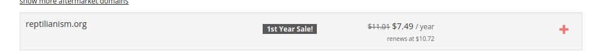
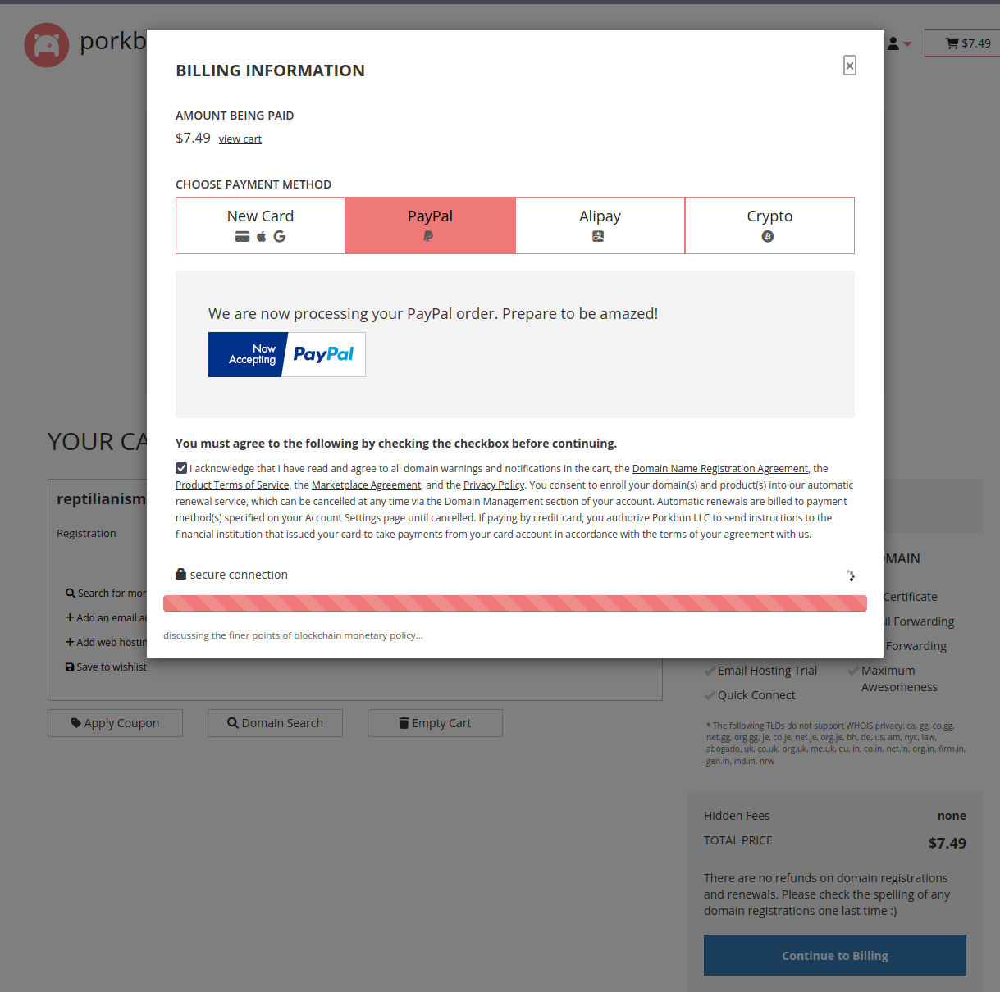
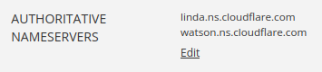
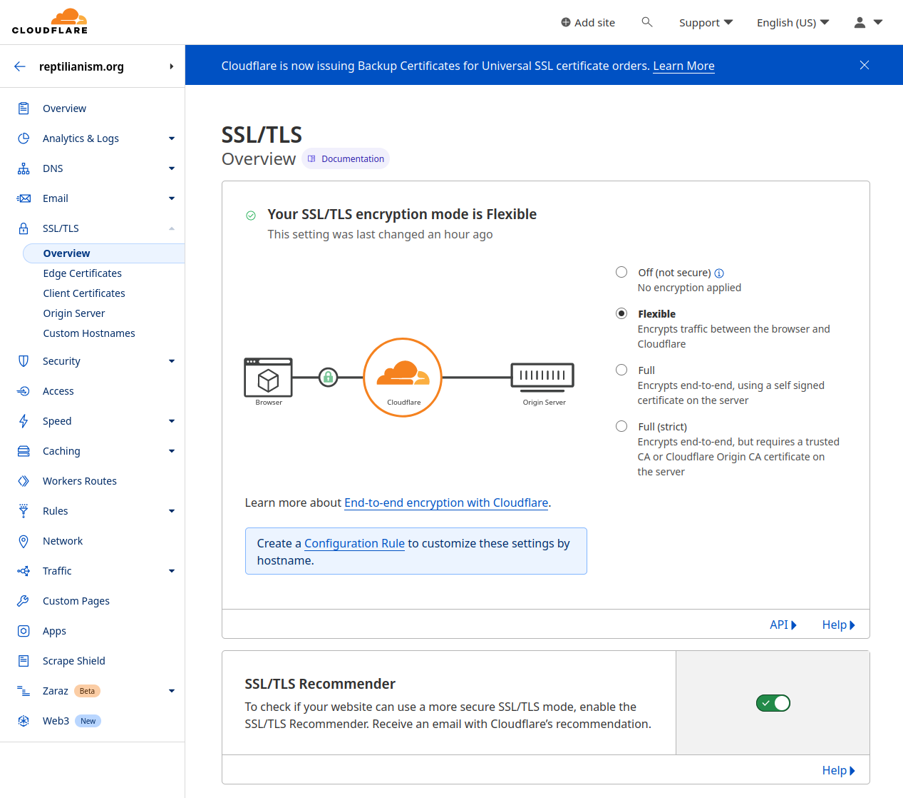
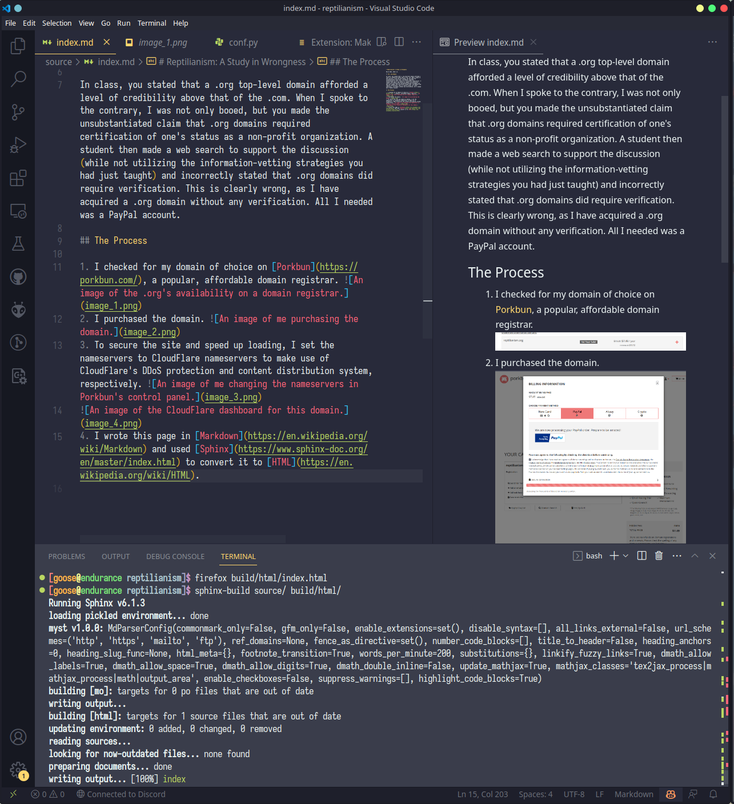

Reptilianism: A Study in Wrongness¶
March 30th, 2023 C.E.
The Fallacy¶
In class, you stated that a .org top-level domain afforded a level of credibility above that of the .com. When I spoke to the contrary, I was not only booed, but you made the unsubstantiated claim that .org domains required certification of one’s status as a non-profit organization. A student then made a web search to support the discussion (while not utilizing the information-vetting strategies you had just taught) and incorrectly stated that .org domains did require verification. This is clearly wrong, as I have acquired a .org domain without any verification. All I needed was a PayPal account.
The Process¶
I checked for my domain of choice on Porkbun, a popular, affordable domain registrar. 
I purchased the domain. 
To secure the site and speed up loading, I set the nameservers to CloudFlare nameservers to make use of CloudFlare’s DDoS protection and content distribution system, respectively.  
I wrote this page in Markdown and used Sphinx to convert it to HTML. 
I hosted this on my server and set CloudFlare to forward the content of my webserver to this domain. (No image this time because it’s mostly just editing configuration files).
That was it. Those were all the steps.
Addressing a Possible Counterargument¶
One might say that all this requires an awful amount of tech-savviness and expertise, but the reality is that anyone with Google, common sense, and $7.49 in digitally supported money can do it.
The Exigence¶
Pure, unbridled spite and a passion for facts.
[What follows is an August 10th, 2023 Revision]
It's my autism, actually. I just found it easier for
the unnamed (and wrong) teacher to continue living in her fantasy world where facts are a matter of opinion
and I was just a weird, mean student. The fact of the matter is that it is trivially easy to fact check,
as we are in the era of the internet.